Loading...
MAKKAH TRAVEL - UMRA ZIYORATI
Uzoq yillik tajriba, doimiy hursand mijozlar, sifatli xizmatlar...
Makkadagi ziyoratlar

NUR TOG'I (HIRO G'ORI)
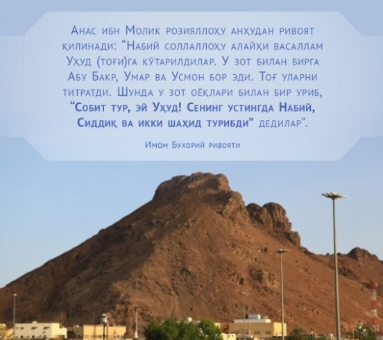
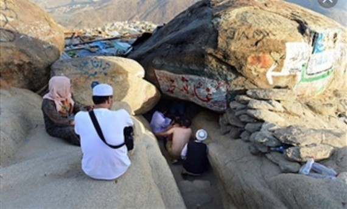
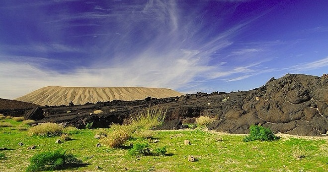
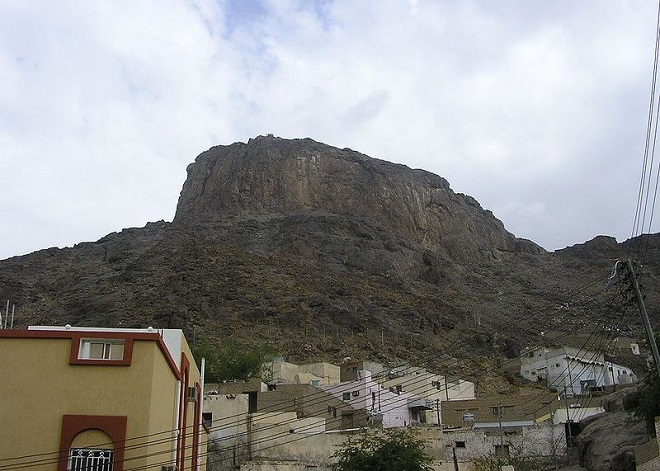
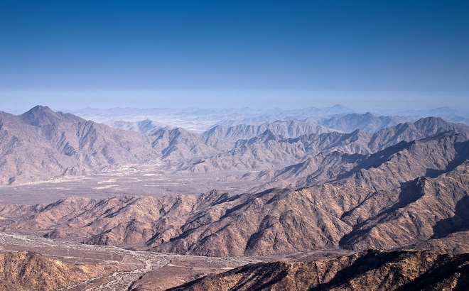
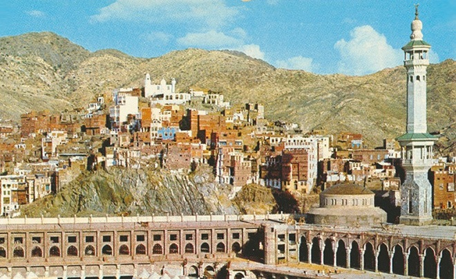
Tog‘larning deyarli barchasi Saudiya Arabistonida bo‘lib, ularning qadimiy nomi muhim tarixiy voqealarga bog‘liq. Shu boisdan aksari muqaddas sanaladi va butun dunyo musulmonlari ushbu tog‘larga ziyoratga keladi. Sofa va Marva Makkadagi ikki muqaddas tepalik. Ularga borish haj va umrani bajarish amallaridan biri hisoblanadi. Qur’oni Karimda: إِنَّ الصَّفَا وَالْمَرْوَةَ مِن شَعَآئِرِ اللّهِ فَمَنْ حَجَّ الْبَيْتَ أَوِ اعْتَمَرَ فَلاَ جُنَاحَ عَلَيْهِ أَن يَطَّوَّفَ بِهِمَا وَمَن تَطَوَّعَ خَيْراً فَإِنَّ اللّهَ شَاكِرٌ عَلِيمٌ “Albatta, Safo va Marva Alloh(dini)ning belgilaridandir. Kim Baytullohni haj yoki umra qilsa, ikkovlari o‘rtasida sa’yi qilish gunoh emas. Kim yaxshilikni xolisona qilsa, bas, albatta, Alloh shukr qiluvchi va biluvchidir. (Oyatda Alloh taolo: “Kim Baytullohni haj yoki umra qilsa, ikkovlari o‘rtasida sa’yi qilish gunoh emas”, deydi. Ushbu oyat hujjat bo‘lib shariatimizda Safo va Marva tepaliklari o‘rtasida sa’yi qilish vojib amal, deb belgilangan. Oyatda sa’yi qilish vojib bo‘ladi, deyish o‘rniga, “Sa’yi qilish gunoh bo‘lmaydi”, deyilishining boisi shuki, ikkala tepalikda but borligi uchun, sa’yi qilish mushriklarning ishi, gunoh bo‘ladi, deb o‘ylab musulmonlar sa’yi qilmay qo‘ygan edilar. Shuning uchun Alloh taolo gunoh bo‘lmaydi, sa’yi qilinglar, demoqda.)” (Baqara surasi, 158 oyat).
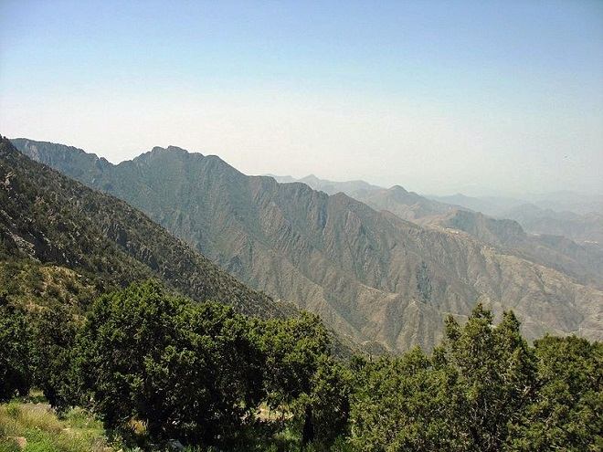

Alal Badr (Hallat al-Badr) ,
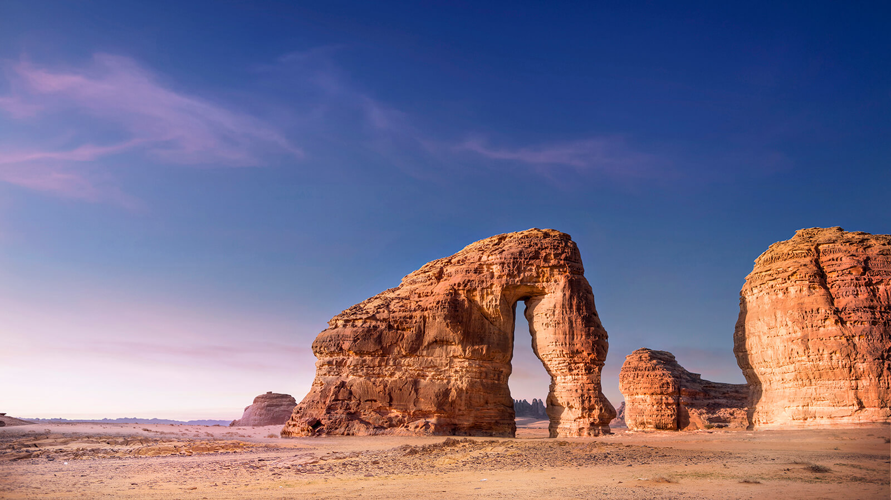
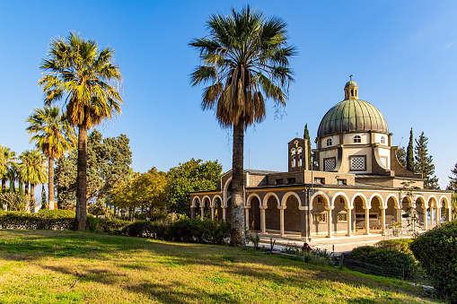
Harratul-Uvairidning lava maydonida joylashgan. Ba'zi tadqiqotchilar va tahlilchilar (masalan, I. Velikovskiy va Sigmund Freyd) bu tog 'Sinay vahiyining joyidir. Ular Chiqish vaqtida vulqon faol bo'lishi mumkinligidan kelib chiqdilar.
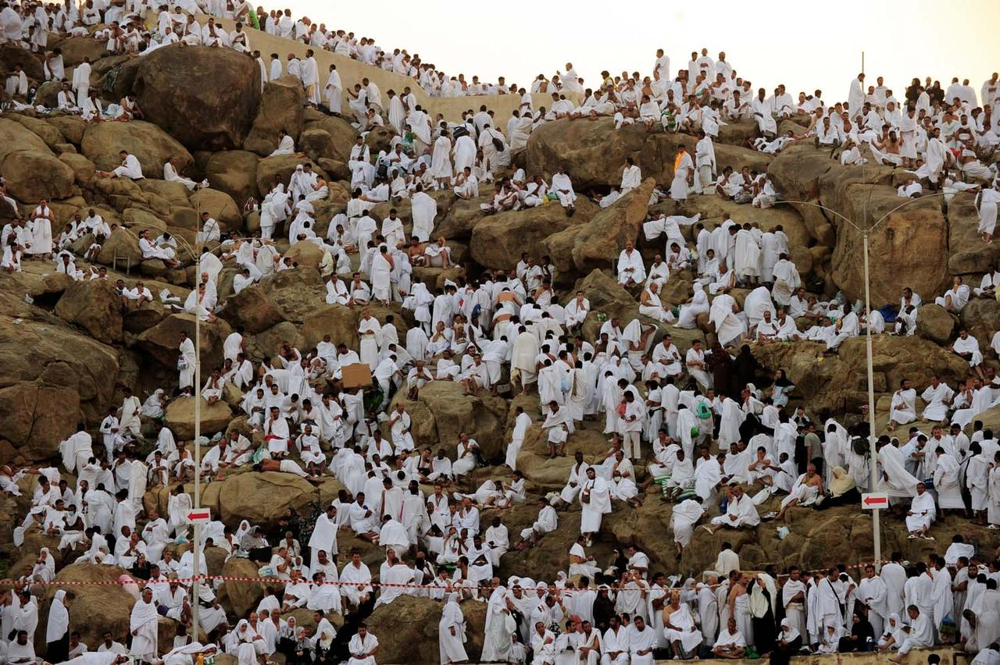

AROFAT TOG'I
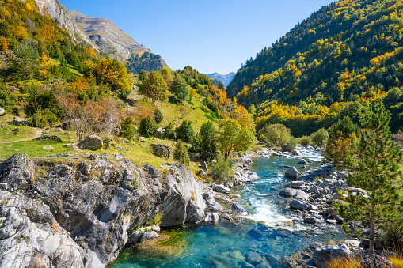
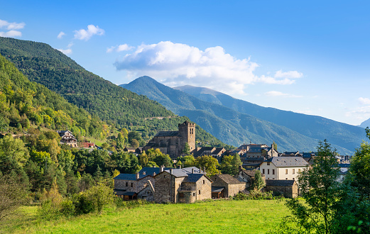
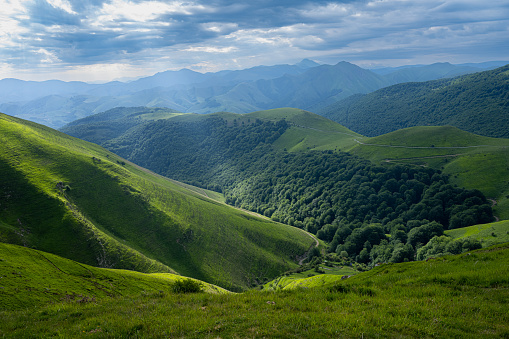
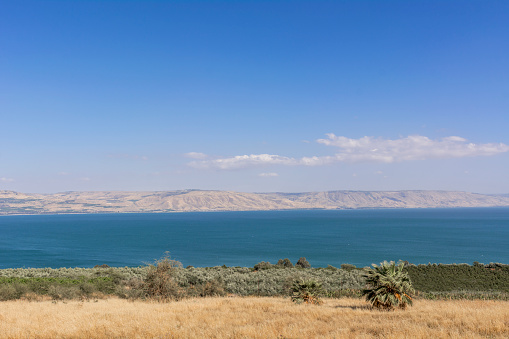
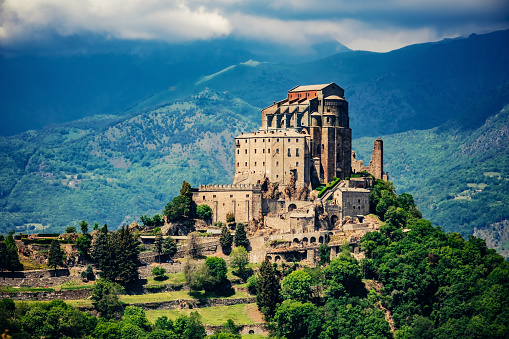
Harratul-Uvairidning lava maydonida joylashgan. Ba'zi tadqiqotchilar va tahlilchilar (masalan, I. Velikovskiy va Sigmund Freyd) bu tog 'Sinay vahiyining joyidir. Ular Chiqish vaqtida vulqon faol bo'lishi mumkinligidan kelib chiqdilar.
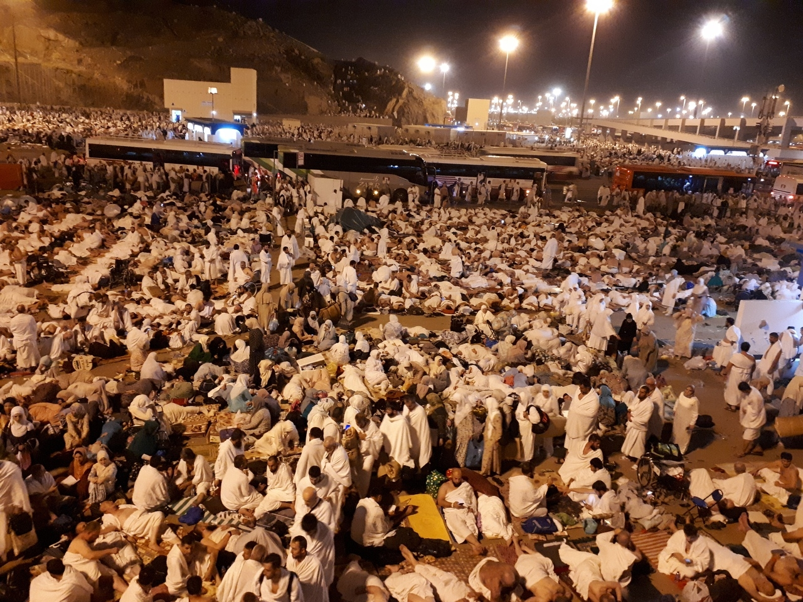
MUZDALIFA
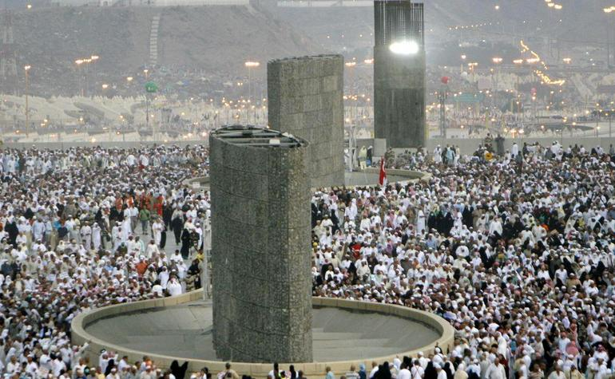
Bismillahir Rohmanir Rohim. Salom taolog bitmas-tuganmas hamdu sanolar bwlsin. Paygambarimizga mukammal va batam salovotu durudlar bulsin. Kuyosh botqa, shom namozini o'qimasdan, Arafotdan Muzdalifaga karab yuriladi. Etib kelib, shu joydan tunash uchun joylashiladi. Ta'kidlab aytish kerakki, ode kupligidan bazi kishilar Muzdalifa chegarasiga xali kirib bormay tukhtaidilar, bazilari o'tib ho'm ketadilar. Shunga ehtiyot bulib, chegarada turish kerak. Buerda hufton vaktida shom va hufton namozlari qo'shib o'qiladi. Agar biror kishi bilmasdan shomni yulda oqigan bulsa, qaytaririb oqiydi.
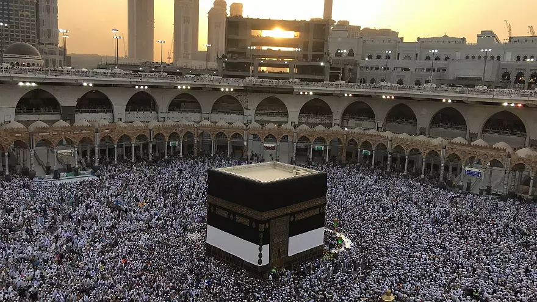
MINO
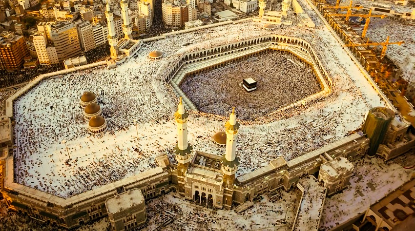
Umra tarixi milodiy 629-yilda Payg‘ambarimiz Muhammad (s.a.v.) o‘zlariga 2000 nafar izdoshlari bilan birga birinchi marta umra qilganlaridan boshlanadi. Birinchi amalga oshirilgan haj ziyorati dindor musulmonlarning ko‘p kurashlari, muzokaralari va hatto qurbonliklari natijasi bo‘lgan. “Kichik ziyorat” deb ham ataladigan umra Saudiya Arabistonining Hijozi mintaqasida joylashgan musulmonlar uchun eng muqaddas shahar hisoblangan Makkaga islomiy ziyoratdir. Bu musulmonlar orasida diniy ahamiyatga ega boʻlgan ikkinchi ziyorat boʻlib, yilning istalgan vaqtida, haj kunlaridan tashqari amalga oshirilishi mumkin. Alloh taologa ibodat qilishning eng hurmatli amallaridan biri sanalgan umra Ka’bani ziyorat qilish va ba’zi muqaddas marosimlarni bajarishni o‘z ichiga oladi..
Madinadagi ziyoratlar

QUBO MASJIDI
Qubo Masjidi
Madina shahridagi ziyorat qilinadigan o'rinlardan biri “Kubo” masjididir. “Kubo” masjidi Islomda birinchilanadi masjid xisob. Paygambarimiz sollallohu alayhi vasallam Madinaga kuchib utayotgan paytlarida Madina yulida kubo deb nomlangan joiga etib, usha bir necha kun turganlar. U erda birinchi bulib “Kubo” masjidiga asos solganlar vailk o'sha masjidda zhamoat namozini o'qiganlar.

QIBLATAYN MASJIDI
Qiblatayn masjidi
Milodiy 623 yilda Savad ibn G'anam ibn Ka'ab tomonidan qurilgan Masjid Al Qiblatayn muborak Madina shahrida joylashgan bo'lib, Islom tarixidagi eng muhim masjidlardan biridir. Masjid Qiblatayn ikki qibla masjidi deb tarjima qilingan boʻlib, Paygʻambarimiz sollallohu alayhi vasallamga Quddusdan Makkaga qiblani (namoz oʻqish yoʻnalishini) oʻzgartirish toʻgʻrisida vahiy kelgan masjid ekanligiga ishoniladi.

UHUD TOG'I
Uhud Tog'i
Uhudgi Madinaning shimoliy tarafida joyi muborak bir togdir. Tog'lanish tezligi 7 km, o'rganish 2-3 km, issiqlik esa 350 metrga yaqin. Tog Madinai Munavvaradan taxmonan 4-5 kilometr uzoqlikda joylashgan. Uhud togida bir necha gor va daralar mavzhud bulib, bazi gorlarning bir yarim metnni, foyda esa o'n metni tashkil etadi.

HURMO BOG'I
Hurmo bog'i
Pishgan xurmo mevalari naviga qarab sariq-qizildan to‘q jigarranggacha farq qiladi. Mazkur mevalar ko‘pincha quruq meva sifatida sotiladi. Xurmolarning quritilganligini ularning tashqi ko‘rinishiga qarab aniqlash mumkin. Po‘sti qanchalik silliq bo‘lsa, meva shunchalik yangi bo‘ladi..

QUR'ON BOSMAXONASI
Qur'on bosmaxonasi
Kuroni Karim 22 yil 2 oy 22 kun mobainida Rasulullohga (solllohu alayhi vasallam) oyatlar holida nozil bulgan. Oyat Kuroni Karim harflaridan bir fosila bilan azhralgan ilohy kalomdir. Oyati karimalar orasida bir sahifaga uzun oyatlar bulishi bilan birga o'rtacha uzunlikda va bitta suzdan iborat bulganlari ham bor. Biror vazn yoki sheriy ruhga ega emas. Kuroni Karimning o'z ruhi bor va u ilohiy vahining yuksak hikmatlarini zhamlagan ilohiy kalomdir.
Paketlar
20 kunlik paketlar-2080$ECONOM
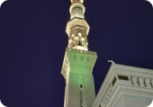
Madinada 7 kun
Makkada 13 kun
Mehmonxonalarni 3*
2 mahal ovqatlanish
4 kishilik honalar
SILVER
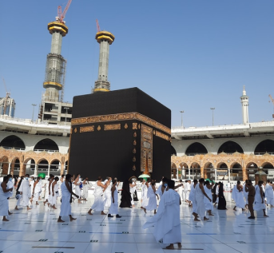
Madinada 7 kun
Makkada 13 kun
Mehmonxonalarni 4*
2 mahal ovqatlanish
3-4 kishilik honalar
GOLD
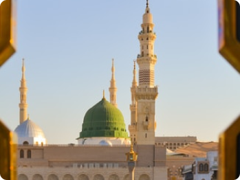
Madinada 7 kun
Makkada 13 kun
Mehmonxonalarni 5*
3 mahal ovqatlanish
2 kishilik honalar
15 kunlik paketlar-1850$
ECONOM
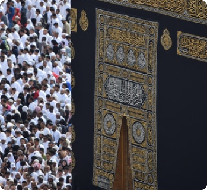
Madinada 5 kun
Makkada 10 kun
Mehmonxonalarni 3*
2 mahal ovqatlanish
4 kishilik honalar
SILVER
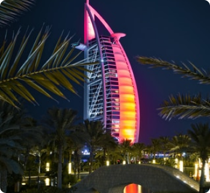
Madinada 5 kun
Makkada 15 kun
Mehmonxonalarni 4*
2 mahal ovqatlanish
3-4 kishilik honalar
GOLD
Madinada 5 kun
Makkada 10 kun
Mehmonxonalarni 5*
3 mahal ovqatlanish
2 kishilik honalar
Bizning xizmatlar
UMRA VISA
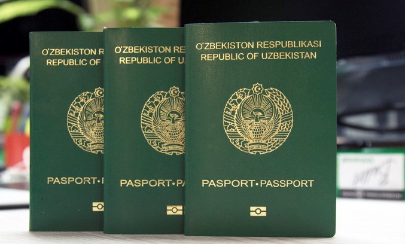
Qur'on bosmaxonasi
Kuroni Karim 22 yil 2 oy 22 kun mobainida Rasulullohga (solllohu alayhi vasallam) oyatlar holida nozil bulgan. Oyat Kuroni Karim harflaridan bir fosila bilan azhralgan ilohy kalomdir. Oyati karimalar orasida bir sahifaga uzun oyatlar bulishi bilan birga o'rtacha uzunlikda va bitta suzdan iborat bulganlari ham bor. Biror vazn yoki sheriy ruhga ega emas. Kuroni Karimning o'z ruhi bor va u ilohiy vahining yuksak hikmatlarini zhamlagan ilohiy kalomdir.
Viza ko'magi
- 2 dona rangli fotosurat
- Oq fonda 4x6 (ayollar ro'mol o'ragan holda)
- -solomatligi;
- -tolov qobiliyati;
- ziyoratga ma'naviy tayyorgarligi;
Shuningdek, ziyoratchilar quyidegi talablarga javob berishlari kerak:
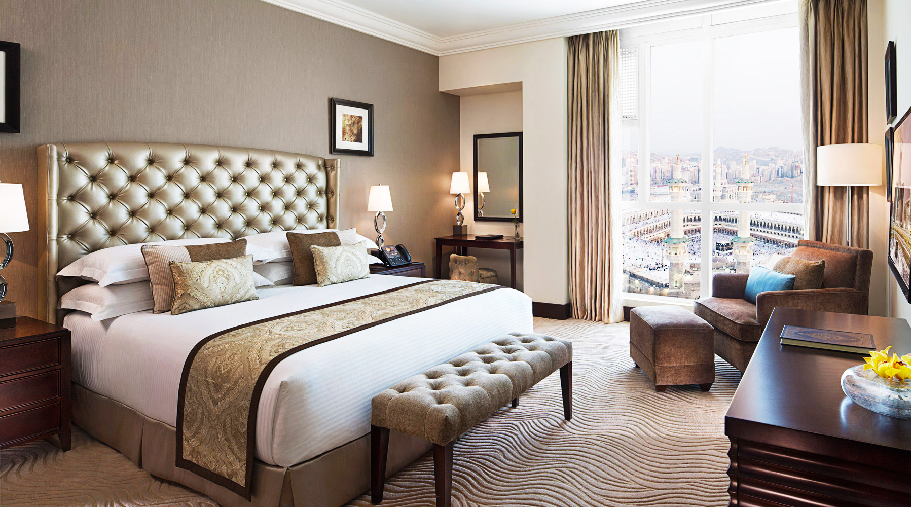
4-5 YULDIZLI MEHMONXONA
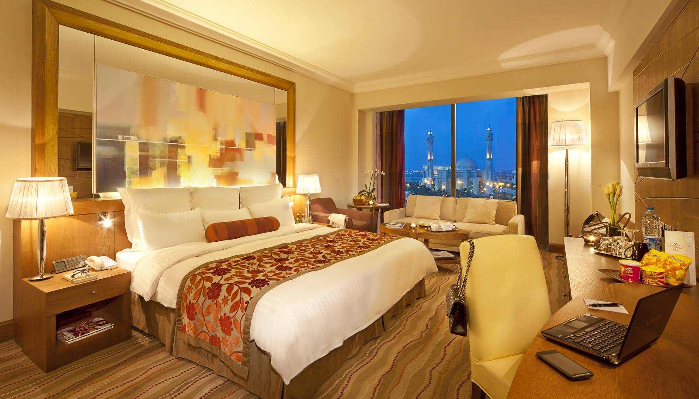
Har bir inson vaqti-vaqti bilan chiroyli, tasalli va sokin ta'tilga chiqishni xohlaydi, ammo dam olish kunlari uchun 5 yulduzli mehmonxonani sotib oladigan pul har kimga ham tegishli emas. Har bir necha yilda bir marta, dam olish kunlarida sayr qilish uchun yetarli mablag‘ni jamg‘argan bo‘lsangiz, sizda birinchi darajali mehmonxonaga borish va shahar bo‘ylab sayohatga oz vaqt qoldirish yoki arzonroq 4 yulduzni tanlash imkoniyati mavjud. mehmonxona va mehmonxona atrofi taklif qiladigan eng yaxshi narsalarni ko'rish uchun yaxshi byudjetga ega.
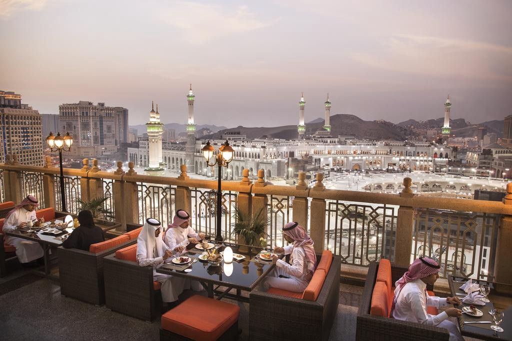
O'rta Makkadagi Haj va Umra Ekspressidagi eng yaxshi mehmonxona | tomonidan Hajj Umra Express | O'rta

ELLIKBOSHI
Saudiya Arabistoni Haj vazirligi tomonidan Oʻzbekiston hojilarga yaratilgan shart-sharoitlar boʻyicha Malayziya, Indoneziya, Turkiya singari birinchi beshtalik davlatlar safiga kiritildi. Bu haqda Oʻzbekiston Respublikasi Vazirlar Mahkamasi huzuridagi Din ishlari boʻyicha qoʻmita raisi, “Haj-2019” Ishchi guruhi rahbari Jasur Akramov Makka shahrida yurtimiz hojilari bilan tashkil etilgan uchrashuvda maʼlum qilindi.
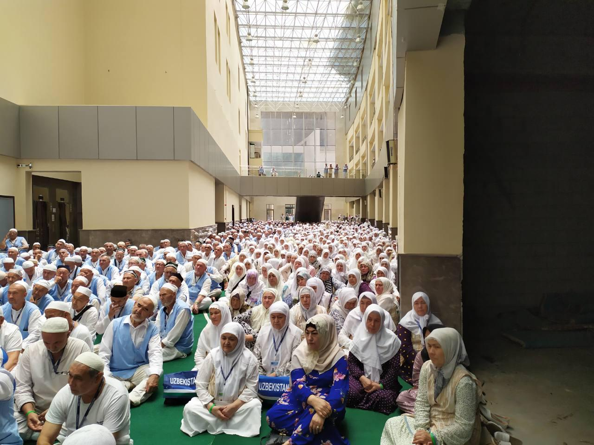
— Haj amalini bajarish uchun ushbu muqaddas manzil-makonga yetib kelib, bekamu koʻst ibodat qilishga intilayotganingiz, bugungi kunga qadar Paygʻambarimiz (s.a.v.)ga salom yoʻllaganingiz, umrani ado etganingiz — ulugʻ baxt, — deydi Oʻzbekiston Musulmonlari idorasi raisi, muftiy Usmonxon Alimov. — Bu Ollohning eng suygan bandalariga nasib etadi. Davlatimiz tomonidan haj mavsumi davomida sizlar uchun barcha shart-sharoit muhayyo qilib berilmoqda. Bu Prezidentimiz tashabbusi bilan odamlarni rozi qilish yoʻlida olib borilayotgan xayrli ishlar samarasidir. Zotan, odamlari rozi yurtga Yaratgan ham neʼmatlarini yogʻdiradi inshaAlloh.

AVIA CHIPTA
Umri davomida bir marta umraga, bir marta hajga borib, muqaddas makonlarda bo‘lib, Madinai munavvarada Payg‘ambar sollallohu alayhi vasallamning ravzai shariflarini ziyorat qilish, Masjidun Nabaviyda boshini sajdaga qo‘yish, Makkai mukarramani ziyorat qilib Rabbimiz farz qilgan haj amallarini bajarib, Islomning beshinchi arkonini ham ado etish har bir musulmon va muslimaning orzusi. Mehribon Parvardigorimiz barchamizni shunday farahli kunlarga yetkazsin.
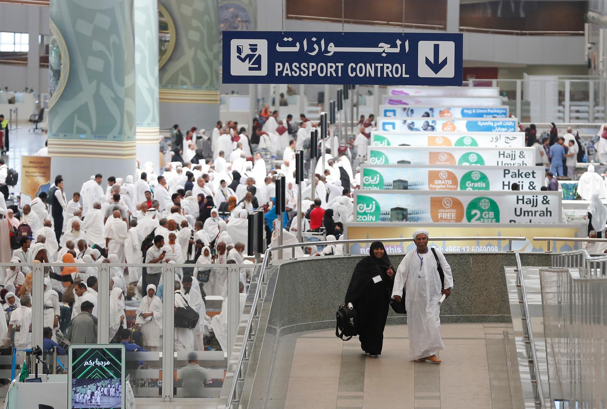
Ammo vaqti-vaqti bilan hajga borish sharoitlari turli sabablarga ko‘ra o‘zgarib turadi, bu tabiiy hol, albatta. Aytaylik, Masjidul Haromda kapital ta’mirlash ishlari bajarilsa yoki Saudiya davlati siyosatida haj bilan bog‘liq o‘zgarishlar bo‘lsa, bu holatlar butun dunyo musulmonlarining haj safariga ta’sir ko‘rsatadi.
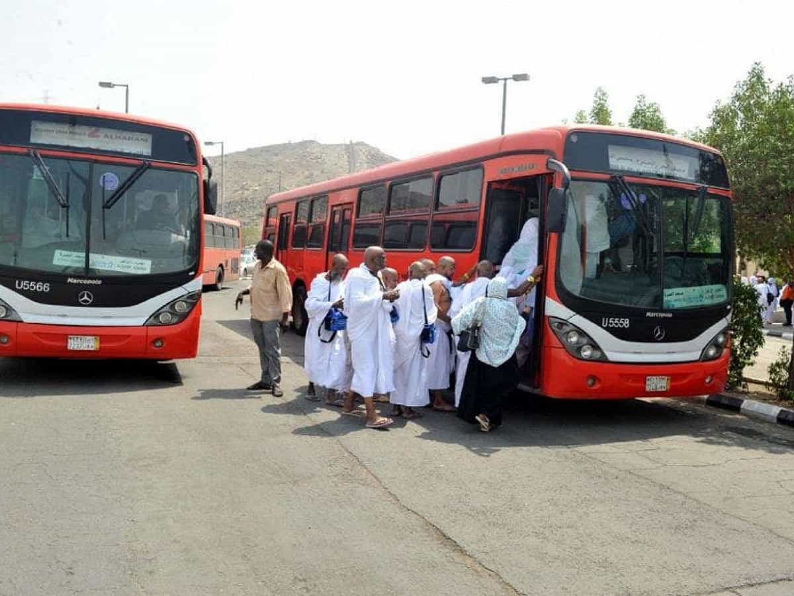
TRANSFER XIZMATI
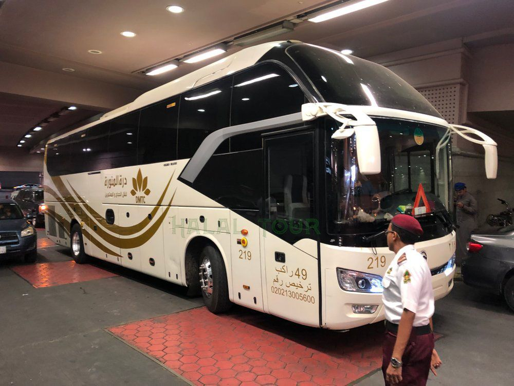
Makk va Madina shaharlarida ziyoratchilarimizga xizmat ko'rsatayotgan avtobus hamda yengil avtomobillar
Makk va Madina shaharlarida ziyoratchilarimizga xizmat ko'rsatayotgan avtobus hamda yengil avtomobillar.
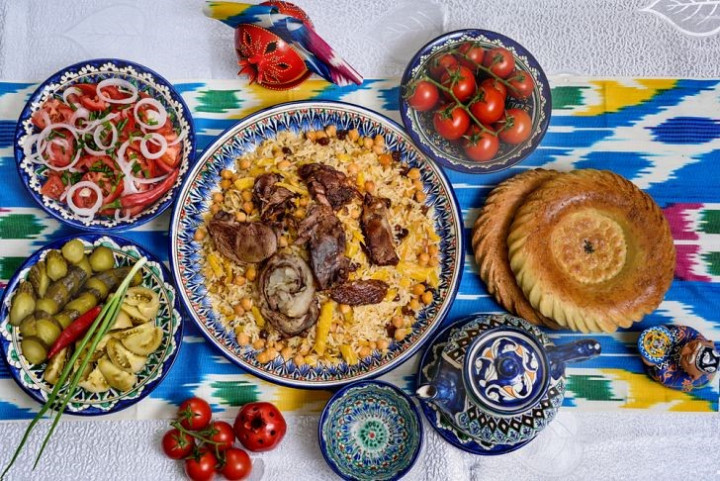
2-MAHAL TAOM
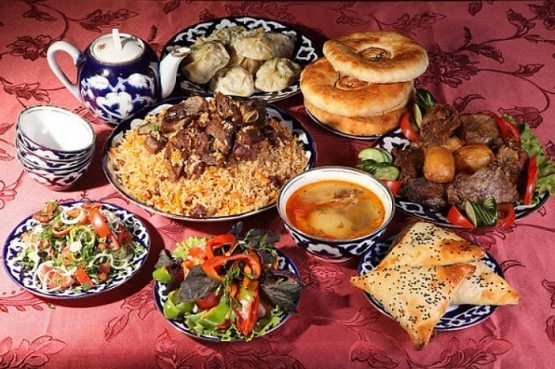
Ziyoratchilar safar davomida mehmonhona restoranida shved uslubida ertalabki nonushtalarni tanovul qilishlari hamda O'zbek milliy taomlaridan kechqurungi ovqatlanishda tanavul qilishlari mumkin bo'ladi taomlar sifatli va talabga javob beradi.
Manzilimiz
UZB +998906235577
UZB +998952015577
UZB +998906235577
Manzilimiz: Andijon shaxar , Mustaqilik shox ko'chasi 4-uy
Mo'ljal: Devoaoboy Masjididan 50 metr pastroqda
Aloqa: